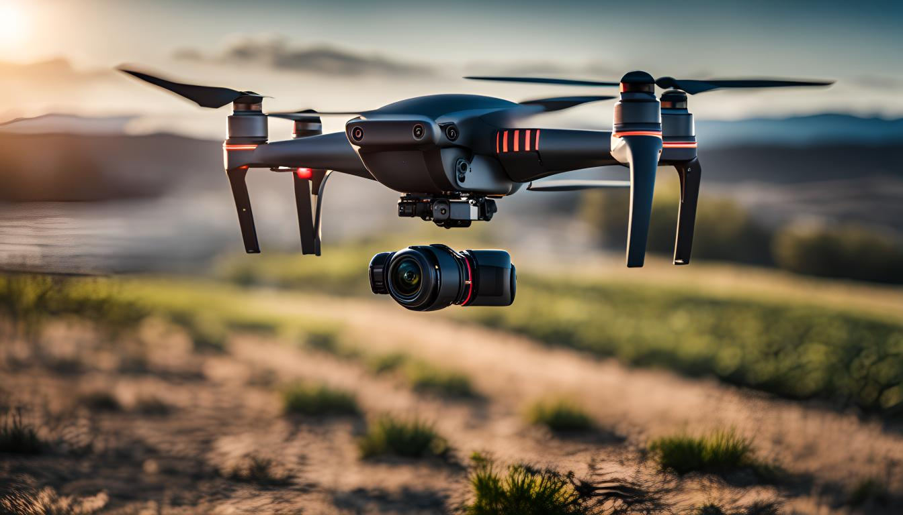

20/03/20254
Drone Technology and Image Processing: The Future of Aerial Monitoring Systems
Drone technology has made impressive advancements in recent years, particularly with its image processing capabilities. In this article, we explore the intersection of these two dynamic fields and how this integration can revolutionize various industries. From the fundamental concepts of modern drone systems to their widespread applications, data analysis techniques, and innovative approaches, this article provides an in-depth look at how drone and image processing technologies create a powerful synergy when combined. We invite you to explore this exciting technological development and reflect on potential use cases through this content.
Basic Concepts and Applications
Drone technology and image processing are gaining increasing popularity. These technologies have the potential to enhance efficiency and reduce operational costs across many different sectors. Drone technology refers to small and lightweight aerial vehicles with remote-controlled or autonomous flight capabilities. Image processing, on the other hand, involves software methods that allow various analyses to be performed on images captured by these devices.
Drones are highly effective in aerial inspection applications. For example, they are used in tasks such as photographing large areas from the air, inspecting critical infrastructure, or damage assessment after natural disasters. Autonomous systems minimize human intervention, providing faster and risk-free operations. Image processing technologies allow meaningful data to be extracted from the images obtained, enabling more informed decision-making.
In the industrial inspection sector, drones are also widely used. In particular, sectors such as construction, energy, and agriculture require regular monitoring of large areas and complex structures. Drones stand out with their ability to provide real-time imagery quickly and safely in such challenging environments. Image processing then analyzes the collected data and provides early warnings about potential problems.
Image Processing Techniques in Drone Systems and Use Scenarios
Advances in drone technology and image processing are paving the way for revolutionary applications in various industries. These technologies, particularly when used in aerial inspection and autonomous systems, enable us to accomplish tasks that were previously impossible.
The image processing techniques underlying drone systems are diverse. These techniques mainly include object recognition, tracking, and classification. Object recognition enables drones to perceive their surroundings and recognize specific objects, which is critical in tasks such as search-and-rescue missions to detect missing persons.
Another important application of image processing is in mapping and 3D modeling. Drones can capture high-resolution images of terrestrial or urban areas to create digital maps of these regions. This opens up a wide range of applications, from urban planning to environmental monitoring.
In the agricultural sector, advanced image processing sensors placed on drones allow monitoring of plant health and increased productivity. These systems observe the health of vegetation and ensure that necessary interventions are made in a timely manner.
In construction and industrial inspection, image processing techniques are utilized. Drones can capture photographs of buildings, whether they are under construction or existing structures, offering a more detailed analysis of structural defects, potential risks, and other important points that need to be monitored.
This wide range of use scenarios is continually increasing the effectiveness of drone technology and image processing in the business world. These technologies provide safer, more efficient, and cost-effective solutions while also minimizing human intervention in challenging and dangerous field conditions.
Data Analysis with Drone Technology and Image Processing
Drone technology and image processing are revolutionizing data analysis processes. Especially in autonomous systems and industrial inspection, the data collected using these technologies is processed and transformed into more meaningful and usable information. Drones are equipped with various sensors and cameras, enabling them to capture detailed imagery over large areas. These images are analyzed using image processing algorithms, and the results are then presented to the relevant parties.
Image processing techniques play a critical role in processing the raw data collected by drones. For instance, in the agricultural sector, images obtained by drones can be used to perform plant health analysis. These analyses can detect the vitality of vegetation and signs of disease. Additionally, this data can assist in planning activities such as irrigation and fertilization more efficiently.
In industrial inspection applications, drone technology can be used to continuously monitor structural integrity and safety. Drones can regularly inspect hard-to-reach structures, bridges, and high-rise buildings. Image processing algorithms detect cracks and damages on these structures, becoming part of early warning systems.
In summary, in aerial inspection and security areas, drones provide fast and efficient monitoring of large areas. In tasks such as monitoring critical infrastructure and boundaries, drone technology and image processing systems have become indispensable tools. These systems enable data to be processed faster and more accurately, contributing significantly to decision-making processes.
Innovative Approaches in Drone Technology
Innovative approaches in drone technology and image processing have the potential to revolutionize the fields of aerial and industrial inspections. Particularly, the development of autonomous systems is expanding the usage areas of drones and enabling them to perform more complex tasks.
For example, autonomous drones can follow pre-programmed routes to perform aerial inspections of large areas. These systems, equipped with image processing technology, can examine agricultural areas or critical infrastructure in detail. In this way, timely intervention can prevent potential problems, reducing costs and increasing efficiency.
Furthermore, in industrial inspections, drones can enter dangerous or hard-to-reach areas, eliminating risky human interventions. Drones equipped with high-resolution cameras and advanced image processing algorithms play a significant role in detecting structural damages or leaks.
Another promising approach is inter-drone communication and coordination systems. This enables multiple drones to work synchronously, inspecting large areas more quickly and efficiently. These developments are especially important in large-scale projects that require comprehensive surveillance and tracking.
These innovative approaches in drone technology are transforming drones into far more than just tools for aerial photography and videography, changing the face of the industry. Thanks to these technological advancements, drones are becoming indispensable in an increasing number of sectors and creating new job opportunities.
Frequently Asked Questions
What is drone technology and how does it work?
Drone technology consists of remotely controlled, automatic, or semi-automatic aerial vehicles equipped with various
control systems, sensors, and cameras. These vehicles are flown and operated through ground-based controllers or
computer systems to perform their tasks.
What role does image processing technology play in drone usage?
Image processing technology allows drones to analyze the images they capture and process various data. With this
technology, drones can be used effectively in a wide variety of fields such as search-and-rescue, mapping,
agriculture, and construction.
What is the place of drone and image processing technology in aerial inspection systems?
Aerial inspection systems are critical in ensuring security in areas with heavy traffic and around airports. Drones
can perform fast and effective surveillance and inspection in these systems, quickly detecting dangerous situations
and reporting them to the relevant authorities.
What contributions might drone technology make to aerial inspection systems in the future?
In the future, with improvements supported by artificial intelligence and more advanced image processing algorithms,
drones will be able to perform more complex tasks and further automate aerial inspection systems. This will enhance
the efficiency of air traffic control and minimize potential hazards.
What are other potential use areas for drone technology?
Drone technology has a wide range of applications, from military surveillance to land management in agriculture and
emergency medical supply transportation in healthcare. It is also an effective tool in areas such as fire
monitoring, crime tracking, and rapid intervention during natural disasters.